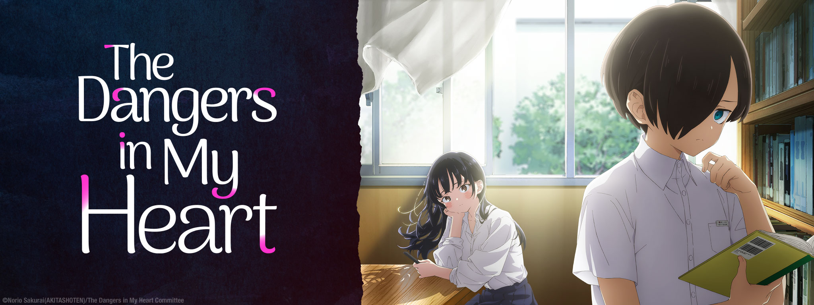
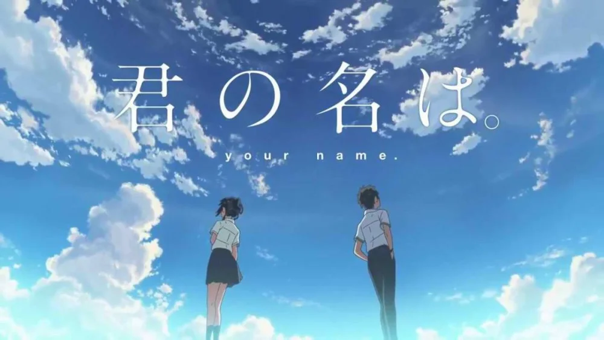
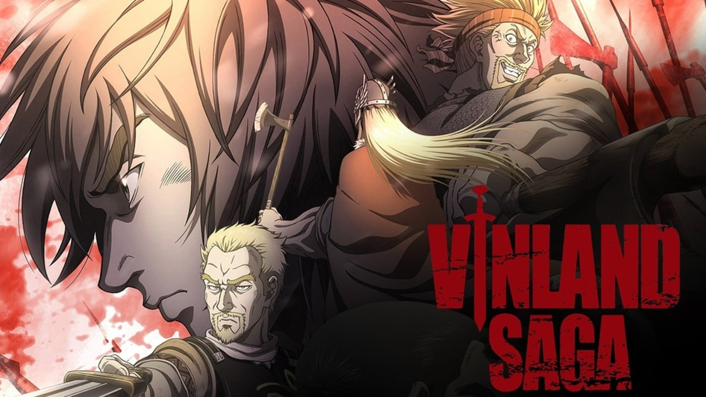
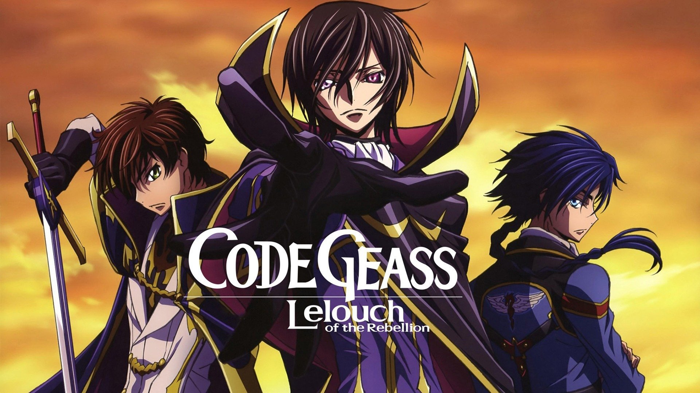

Kyoutarou Ichikawa may look like a shy and reserved middle school student, but deep within his heart is a bloodthirsty killer. His ultimate desire is to see his classmate Anna Yamada's beautiful face writhing in pain before he ends her life. But this fantasy may never come to fruition, as Ichikawa starts to see an entirely different side to Yamada. Often seeking refuge in the library, Ichikawa frequently runs into Yamada.
Hachiman Hikigaya is an apathetic high school student with narcissistic and semi-nihilistic tendencies. He firmly believes that joyful youth is nothing but a farce, and everyone who says otherwise is just lying to themselves. In a novel punishment for writing an essay mocking modern social relationships, Hachiman's teacher forces him to join the Volunteer Service Club, a club that aims to extend a helping hand to any student who seeks their
Maomao, an apothecary's daughter, has been plucked from her peaceful life and sold to the lowest echelons of the imperial court. Now merely a maid, Maomao settles into her new mundane life and hides her extensive knowledge of medicine in order to avoid any unwanted attention. Not long after Maomao's arrival, the emperor's infant children inexplicably begin to experience grave symptoms—almost as if a curse has been cast.

Mitsuha Miyamizu, a high school girl, yearns to live the life of a boy in the bustling city of Tokyo—a dream that stands in stark contrast to her present life in the countryside. Meanwhile in the city, Taki Tachibana lives a busy life as a high school student while juggling his part-time job and hopes for a future in architecture.
Young Thorfinn grew up listening to the stories of old sailors that had traveled the ocean and reached the place of legend, Vinland. It's said to be warm and fertile, a place where there would be no need for fighting—not at all like the frozen village in Iceland where he was born, and certainly not like his current life as a mercenary. War is his home now.
In the year 2010, the Holy Empire of Britannia is establishing itself as a dominant military nation, starting with the conquest of Japan. Renamed to Area 11 after its swift defeat, Japan has seen significant resistance against these tyrants in an attempt to regain independence. Lelouch Lamperouge, a Britannian student,